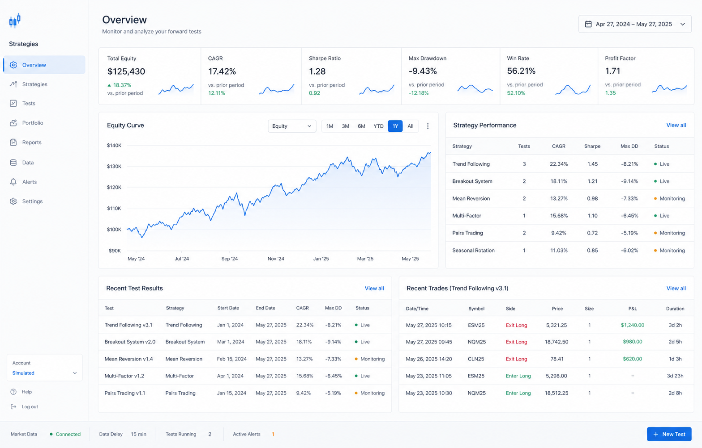

Run forward tests
Observe strategies against live market conditions and keep test results organized.

Forward testing, made measurable
Track live strategy behavior, compare results, and build evidence before you commit capital.
A clearer testing workflow
Observe strategies against live market conditions and keep test results organized.
Compare equity, drawdown, win rate, and other performance signals in one place.
Connect watchlists, trade journal entries, reports, and portfolio context.
Create an account and start building a measurable forward-testing record.